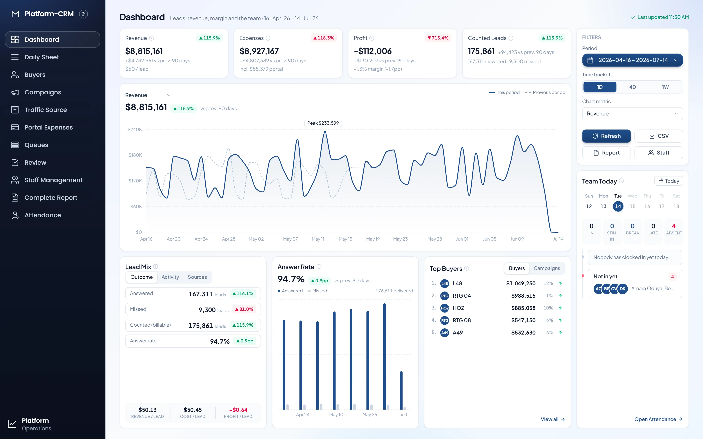
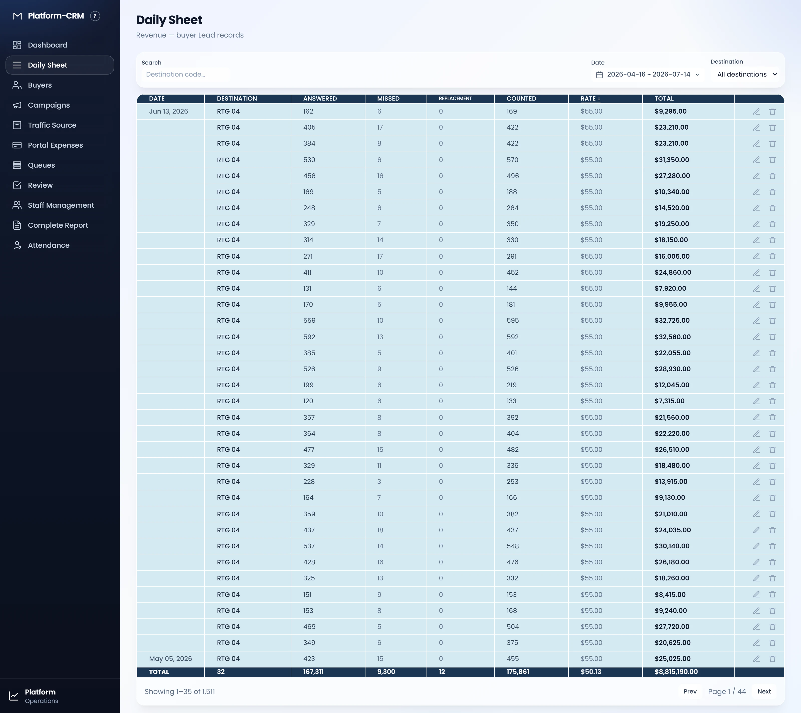
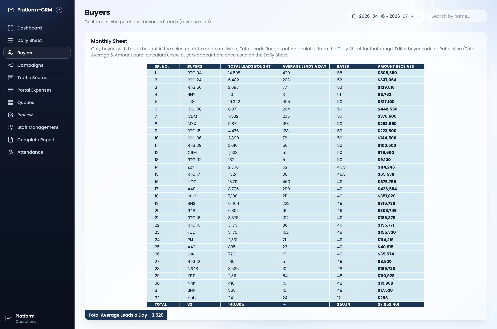
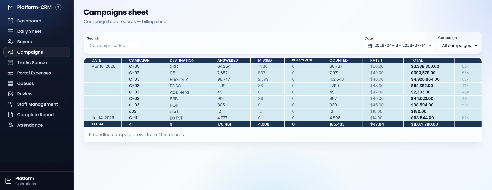
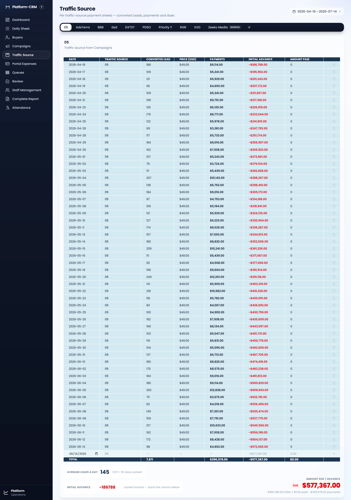
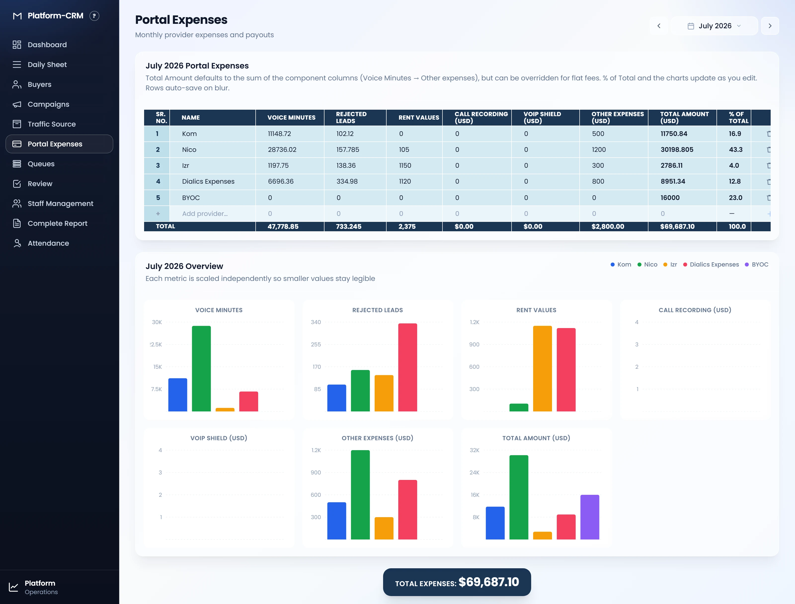
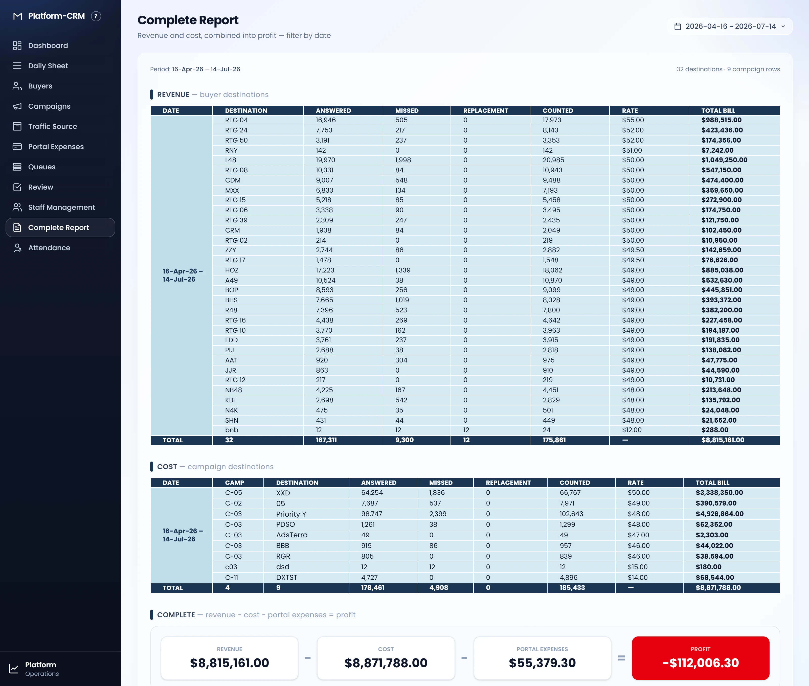
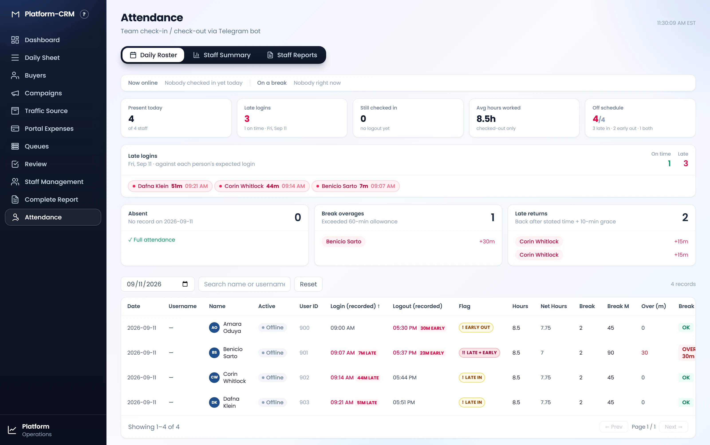

User Manual
Platform-CRM is a pay-per-call / call-forwarding CRM. Your team records the daily call volumes for buyers (the revenue side — calls sold and forwarded to customers) and campaigns (the cost side — the media buying that sources those calls). The gap between the two is your profit. This guide walks through every page and the controls you'll use daily.
Key concepts
A few terms recur across every page. Understanding them makes the whole app read at a glance.
| Term | What it means |
|---|---|
| Buyer | A customer who buys forwarded calls from you — the revenue side. Buyers have a short code such as RTG 04 or L48. |
| Campaign | A media-buying campaign that sources calls — the cost side. Campaigns have codes like C-05 and a traffic destination / source such as XXD. |
| Answered / Missed | Calls that connected vs. calls that rang out, for a single day and destination. |
| Counted | The billable number of calls for that row (answered plus any counted replacements). |
| Rate | The price per counted call, in dollars. |
| Total bill | Calculated automatically as Counted × Rate. You never type this — it updates as you edit. |
| Profit / Margin | Revenue (from buyers) minus Cost (from campaigns). A negative number is shown in red. |
Everything you enter lives on the Daily Sheet (revenue) and the Campaigns sheet (cost). The Dashboard, Buyers, and Complete Report pages are all views that summarise those two sheets — you rarely edit them directly.
Shared controls
The date-range picker
Most pages carry a date-range button at the top-right (for example
2026-04-13 ~ 2026-07-11). Every figure on the page is calculated for that period,
so this is the single most important control in the app.
- Click the date button to open the picker.
- Pick a quick preset — Today, Yesterday, Last 7 / 30 / 90 days, or This month — or click two days on the calendar for a custom span.
- Press Apply. The whole page reloads for the new period.
Searching, filtering & sorting
On the sheet pages you can type in the Search box to match a buyer or campaign code, use the destination / campaign dropdown to narrow to one entity, and click a column header to sort. Long lists are paged 35 rows at a time.
Editing data
Data is edited inline. On the Daily Sheet and Campaigns sheet each row has a pencil (edit) and trash (delete) button. On the Buyers sheet you edit the buyer code and rate directly in the cell; totals recalculate instantly.
Dashboard
The landing page. It answers "how are we doing this period?" in one screen — headline numbers up top, trends and rankings below. Change the date range to re-scope everything.

- 1Navigation sidebar — jump to any page; the current page is highlighted.
- 2Date range — sets the reporting period for every card and chart on the page.
- 3KPI cards — Revenue (billed), Running Fee, Profit and Counted Calls, plus Answer Rate, Profit Margin, Active Buyers and Active Campaigns. Each headline shows the change vs. the previous period.
- 4Revenue, running fee & profit over time — the income trend. Toggle Daily / 4 Days / Weekly at the top-right to change the grouping.
- 5Most active buyers — your buyers ranked by revenue for the period.
- 6Answered vs missed calls — call-quality trend on the buyer side; a healthy chart hugs the top (answered) line.
- 7Top traffic sources — campaign spend broken down by traffic source.
A red Profit or negative Profit Margin means cost outran revenue for the selected window — open the Complete Report to see exactly which destinations drove it.
Daily Sheet
Your day-to-day workhorse for the revenue side. Each row is one destination's calls for one day. The Total column and the navy totals bar update automatically from Counted × Rate.

- 1Search — filter rows by destination code (e.g. type
RTG). - 2Date — the reporting period, shared with the rest of the app.
- 3Destination — narrow the sheet to a single destination, or leave on All destinations.
- 4Column headers — Date, Destination, Answered, Missed, Replacement, Counted, Rate, Total. Click a header (e.g. Rate ↓) to sort by it.
- 5Row actions — the pencil edits a record; the trash deletes it (with a confirm).
- 6Totals & pagination — the navy TOTAL bar sums the filtered set; use Prev / Next to page through 35 rows at a time.
Add or correct records inline on the sheet, then move on — the buyer's Total and every summary that references it (Dashboard, Buyers, Complete Report) update the next time you open them.
Buyers
A rolled-up monthly sheet, one row per buyer, for the selected date range. It's the quickest way to see how much each customer bought and to keep their rate current.

| Column | Meaning |
|---|---|
| Buyers | The buyer code. Editable — rename a buyer inline. |
| Total Calls Bought | Auto-summed from the Daily Sheet for the chosen date range. |
| Average Calls a Day | Total calls divided by the active days in the period. |
| Rates | Price per call. Editable — click the cell and type a new value. |
| Amount Received | Calculated automatically (calls × rate). |
A buyer appears here automatically the first time its code is used on the Daily Sheet — there's no separate "add buyer" step. Use the Search by name box to find one quickly.
Campaigns
The mirror image of the Daily Sheet, for the cost side. Each row is a campaign's calls for one day at a given traffic destination. This is where your media-buying spend is recorded.

The controls match the Daily Sheet: Search by campaign code, a Date range, a Campaign dropdown, sortable headers, per-row edit / delete, a navy TOTAL bar and paging. The extra Destination column names the traffic source the campaign was buying.
Daily Sheet totals are your money in; Campaigns totals are your money out. The Complete Report subtracts one from the other for you.
Vendors
A running payment ledger for each traffic source. The page opens with one tab per traffic
source — the same sources you buy on the Campaigns sheet (e.g. DXTST,
RGR) — so you can track, per vendor, how many calls converted, what that comes to, and how much
has actually been paid.

Tabs & the shared date filter
Click a tab along the top to switch vendors. The + tab adds a vendor that isn't in Campaigns — type its name and it behaves exactly like the rest. One date-range picker at the top-right applies to every tab at once: change it and each vendor's rows and totals re-scope to that period.
| Column | Meaning |
|---|---|
| Date | The day the entry is for — one row per day you record. |
| Traffic Source | Filled in for you — always the current tab's vendor. |
| Converted call | How many calls converted that day. You type this. |
| Price (Usd) | Price per converted call, in dollars. You type this; new rows pre-fill the last price used. |
| Payments | Calculated automatically as Converted call × Price. You never type this. |
| Amount paid | How much has actually been paid for that day. You type this. |
Adding & editing rows
- On the bottom (blank) row, set the Date, then type the Converted call count, the Price, and any Amount paid.
- Press Enter or click the + at the end of the row to save it.
- Edit any saved row in place — changes save when you click away; the trash icon removes a row.
The figures below the sheet
Average Calls a Day
Total converted calls ÷ the number of weekdays (Mon–Fri) in the selected date range — calculated for you.
Amount Due / Advance
A balance you type in for the vendor. Pick Due (they owe you — shown red) or Advance (paid ahead — shown green) and enter the amount. It starts at 0.
Payments is what the calls come to (calls × price); Amount paid is what has actually been settled. The navy Total bar sums Converted calls, Payments and Amount paid for the period.
Portal Expenses
A monthly expense sheet, one row per provider, for what you spend running the calling portals. Pick a month with the selector at the top-right; the sheet and its charts are for that month.

| Column | Meaning |
|---|---|
| Name | The provider / expense line. Type to add or rename. |
| Voice Minutes · Rejected calls · Rent values · Payout expenses | The component amounts that make up the bill. You type each. |
| Total Amount (Usd) | Defaults to the sum of the four components, but you can override it for a flat fee. |
| % of Total | That row's share of the month's grand total — calculated for you. |
Rows auto-save when you click away, and the bottom row adds a new provider. Below the sheet, a per-metric chart panel compares providers and a navy band shows the month's Total Expenses.
Leave Total Amount alone and it tracks the four component columns; type a value to pin a flat amount (e.g. a fixed fee) independent of them.
Complete Report
The bottom line. Three stacked sections for the selected period: Revenue by buyer destination, Cost by campaign destination, and a Complete summary that does the subtraction.

Read it top to bottom, following the three labelled bands on the page:
| Section | What it shows |
|---|---|
| REVENUE buyer destinations | Every buyer's answered, missed, counted and total bill, ending in a navy total row. |
| COST campaign destinations | The same breakdown for your campaigns — money spent to source the calls. |
| COMPLETE revenue − cost = profit | Three summary cards. When cost exceeds revenue the Profit card turns red and shows a negative figure. |
Use the date range at the top-right to run the report for any month, quarter or custom window.
Attendance
Tracks team check-in / check-out, fed by a Telegram bot. Staff clock in and out from Telegram; this page turns that into daily rosters and per-member reports.

Three tabs
Daily Roster
Who's online now, plus cards for Present Today, Still Checked In, Avg Hours Worked, Absent and Break Overages, and a searchable table of the day's check-ins.
Staff Summary & Reports
Per-member hours over a period, with XLSX and PDF export buttons for a team sheet, an all-members report, or a single member's daily breakdown.
Attendance data is supplied by the external Telegram check-in bot. On an install where that bot and its tables aren't set up yet, the roster reads "Nobody checked in yet today" and the counts stay at zero — the check-in and summary features light up once the bot is connected.
Accounts & access (optional)
Platform-CRM can run fully open (no login) or with authentication switched on. When it's enabled you sign in with your email and a 6-digit code from the Google Authenticator app — there's no password to remember or leak.
Signing in
Enter your email, then the current 6-digit code from your authenticator app. First-time users scan a QR enrolment link an admin sends them.
Admin extras
Admins get two more sidebar items — Users (create accounts, set per-page access, reset authenticators) and System Logs (a searchable audit trail of who did what).
These items only appear when authentication is enabled and you have the rights to see them. If you don't see Users or System Logs, your install is either open or your account isn't an admin — that's expected.
Tips & FAQ
My numbers look tiny / empty
Almost always the date range. The default window can be a single quiet day — widen it (try Last 90 days) and the charts and totals fill in.
I changed a rate but the Dashboard didn't move
Summary pages load their figures when you open them. Revisit the Dashboard or Complete Report after an edit and it will reflect the new numbers.
A total looks wrong
Totals are always Counted × Rate summed across the filtered rows. Check that your
search box and destination filter aren't hiding rows, and that the date range is what you expect.
How do I remove a record?
On the Daily Sheet or Campaigns sheet, click the trash icon at the end of the row and confirm.